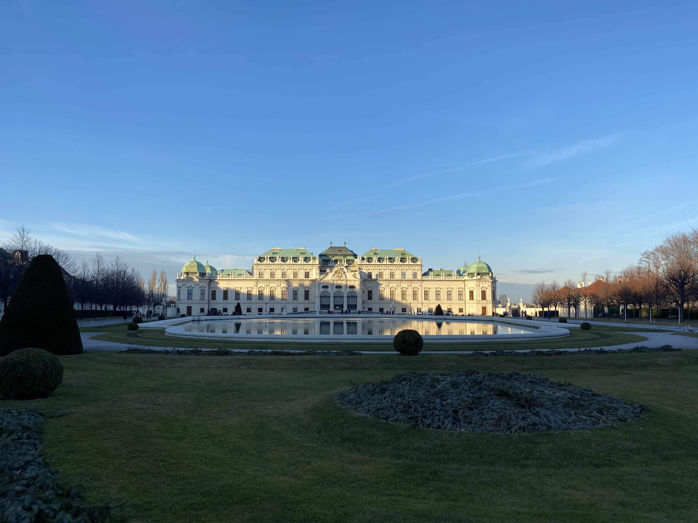

빈은 오스트리아의 수도이다. 도나우강이 도시 내부를 흐르며 인구는 약 190만 명이고 대도시권 광역 인구는 약 260만 명이다.

1.문화
시내에는 슈테판 대성당 등 각 시대의 건축 양식을 보이는 교회와 쇤브룬궁, 빈 국립 오페라 극장, 벨베데레궁, 호프부르크 등 문화 시설이 많다. 이처럼 문화와 관광의 중심지인 동시에, 도나우 강변에는 오스트리아 유수의 공업지대가 펼쳐져 있다.
또한 음악의 도시로도 알려졌으며, 베토벤을 비롯한 모차르트, 슈베르트, 브람스, 하이든 그리고 말러 등의 음악가들이 여기서 활약을 하였다. 빈 필하모니 관현악단과 빈 소년 합창단이 유명하다.
2011년에는 빈 카페하우스 문화가 유네스코(UNESCO) 무형문화유산으로 등재되었다.
2.역사
원시 시대부터 빈에 사람이 살았던 것으로 알려졌고, 기원전 15년에 로마군이 경계선을 세워 “빈드보나”라고 이름을 지었다. 게르만족이 거기를 차지할 때까지 로마의 지배를 받았고, 800년대 후반에는 마자르족이 빈을 통치하였다. 독일 황제군이 900년대 후반에 빈을 정복하였고, 1150년에는 바벤베르크 가문의 주요 관저가 되었다.
1273년에는 합스부르크 왕가의 루돌프 1세가 신성 로마 제국의 황제가 되었다. 빈은 합스부르크 왕가의 자리로서 번영하였다.
교통의 요지여서 11세기에는 십자군의 통로로서 융성하였고, 15세기 이후는 신성 로마 제국의 수도로서 발전하였다.
전성기 시절엔 인구 200만을 넘나드는 대도시였다.
근세에는 오스만 제국군이 두 차례(1529년, 1683년) 빈 문턱 앞까지 왔으나 모두 저지되었다.
나폴레옹 전쟁 시기에는 프랑스군이 두 번이나 빈을 공략하였다. 지그문트 프로이트가 빈에서 《꿈의 해석》을 출간한 1900년경, 빈은 다소 고색창연하기는 하지만 우아한 대도시로 비쳐졌다. 도시 한가운데에는 성 슈테판 대성당이 우뚝 서 있었다. 대성당의 고딕식 첨탑은 바로크 스타일의 여러 교회를 보듬고 있었다. 법원 건물은 화려와 우울의 기묘한 결합이었다.[2] 황제는 여전히 접시 오른쪽에 은제 식기를 놓고 스페인 식으로 식사를 했다.[3]
제1차 세계 대전 후에는 오스트리아의 수도가 되었다.
1938년 독일이 오스트리아를 병합하자, 제2차 세계 대전까지 독일군이 빈에 주둔하고 있었다. 전쟁 말기 소련군의 공세로 벌어진 빈 공세는 베를린 공방전 다음으로 치열하였다. 1955년까지 연합국(미국, 영국, 프랑스, 소련)의 점령 아래 있었다.
영상으로 보는 빈 여행코스!!